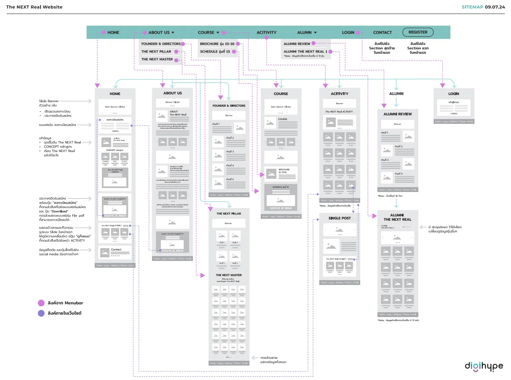
UX / UI · INFORMATION ARCHITECTURE
Sitemap & wireframe planning
Structuring content and mapping page layouts to create a clear path through the website.
View Figma portfolio↗UX/UI DESIGNER · WORDPRESS DEVELOPER
I design and build clear, responsive websites that bring together user needs, thoughtful visuals and practical technology.
A SELECTION OF MY WORK
A mix of digital experiences, website builds and visual design created with a focus on clarity and usability.

Structuring content and mapping page layouts to create a clear path through the website.
View Figma portfolio↗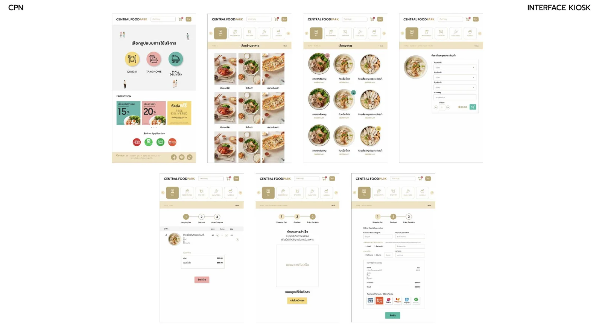
Exploring clear product discovery and ordering flows across desktop and mobile layouts.
View Figma portfolio↗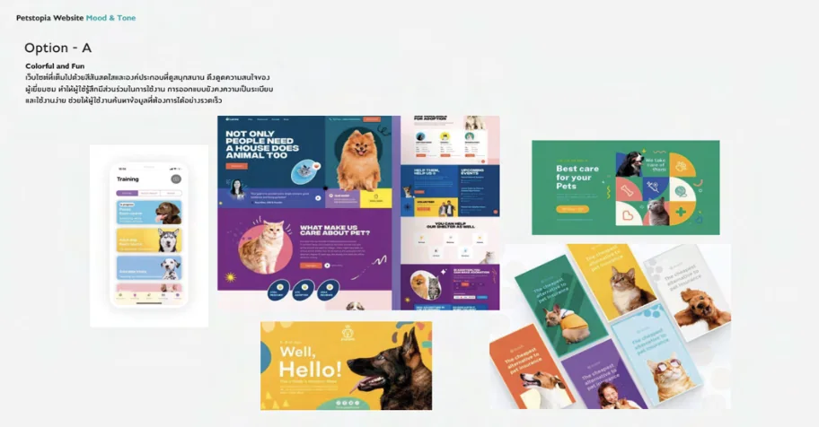
Developing visual directions to align brand character, content and interface design.
View Figma portfolio↗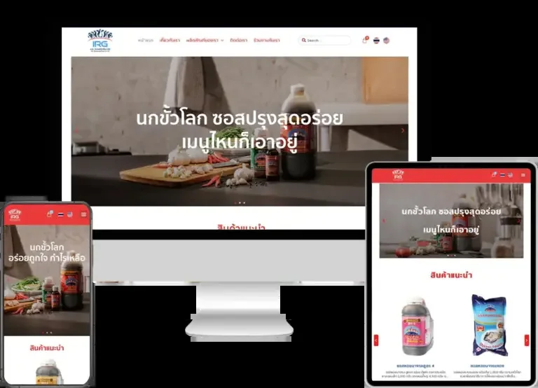
Responsive website design and WordPress implementation.
Visit website↗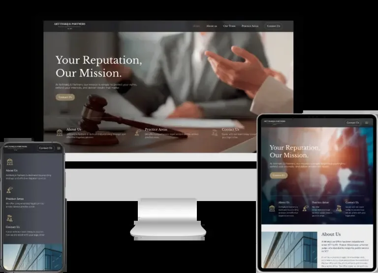
Responsive website design and WordPress implementation.
Visit website↗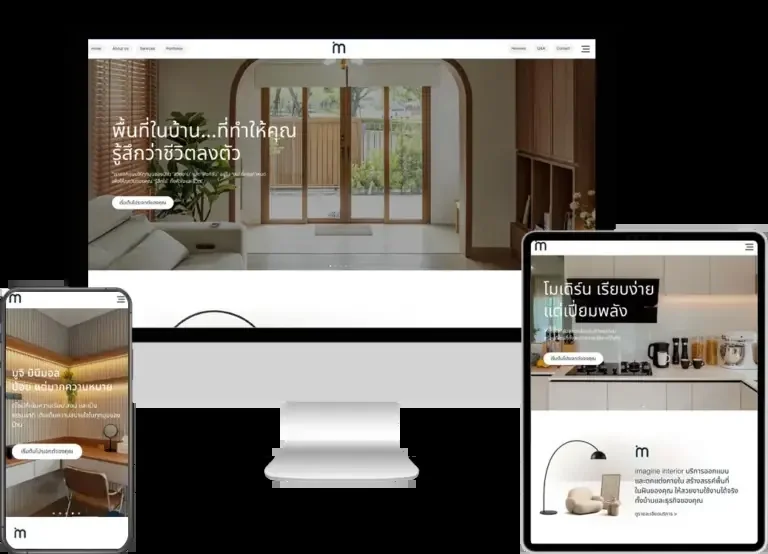
Responsive website design and WordPress implementation.
Visit website↗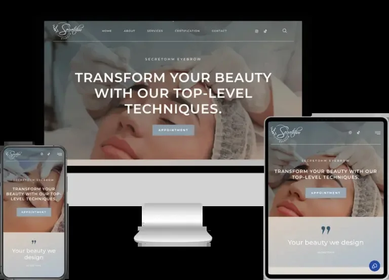
Responsive website design and WordPress implementation.
Visit website↗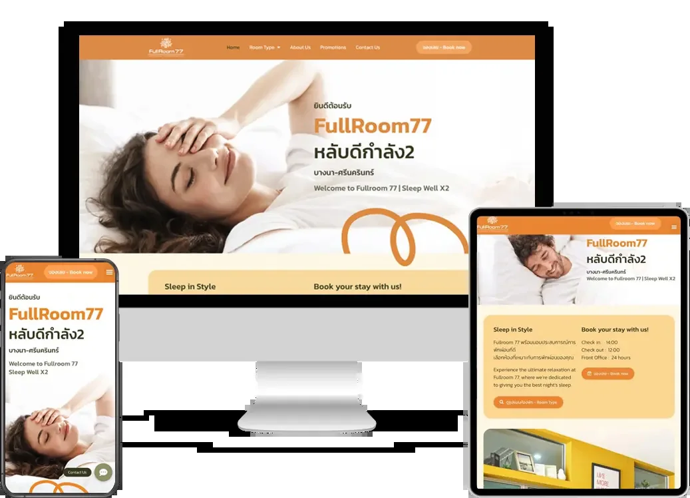
Responsive website design and WordPress implementation.
Visit website↗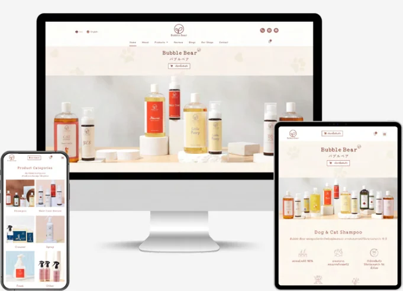
Responsive website design and WordPress implementation.
Visit website↗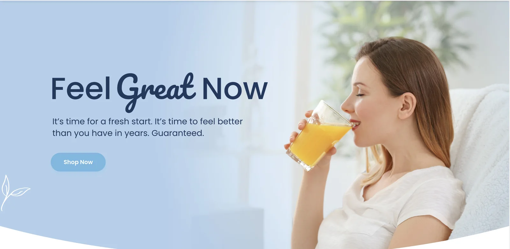
A campaign visual designed to communicate a clear message through imagery and typography.
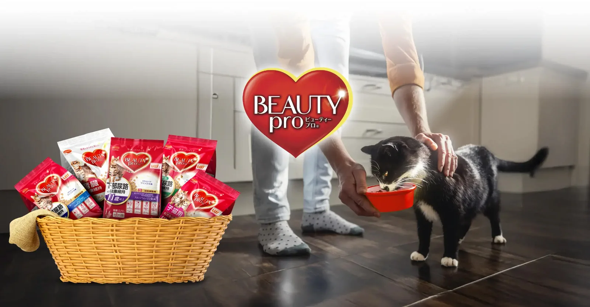
Promotional artwork and product-focused visuals for digital communication.
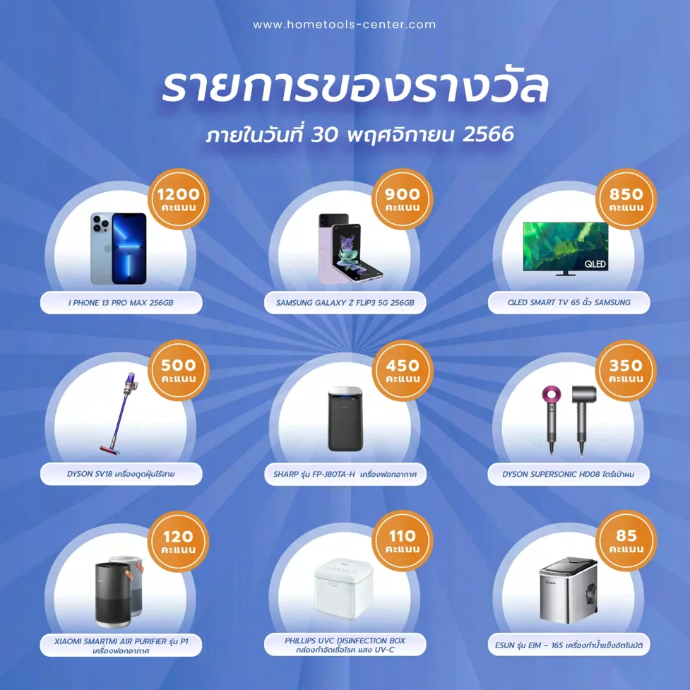
Organizing product details into approachable, easy-to-scan visual content.
Project images are selected from my submitted portfolio. External website links open in a new tab.
A LITTLE ABOUT ME
I'm a creative and detail-oriented Web Designer and Frontend Developer with 4 years of experience specializing in WordPress development.
I work across the full website design process, from sitemap and wireframe planning to interface design and website development. I enjoy turning business requirements into responsive, user-friendly digital experiences.
THE PATH SO FAR
From early design practice to delivering complete website experiences for clients.
DigiHype Online Solution
Bangkok Web Solution
Silpakorn University
Studied the creation and development of instructional media, including digital video production, radio broadcasting and website media.
Ayutthaya Wittayalai School
TOOLS OF THE TRADE
HAVE A PROJECT IN MIND?
I’m open to conversations about design, websites and new opportunities.